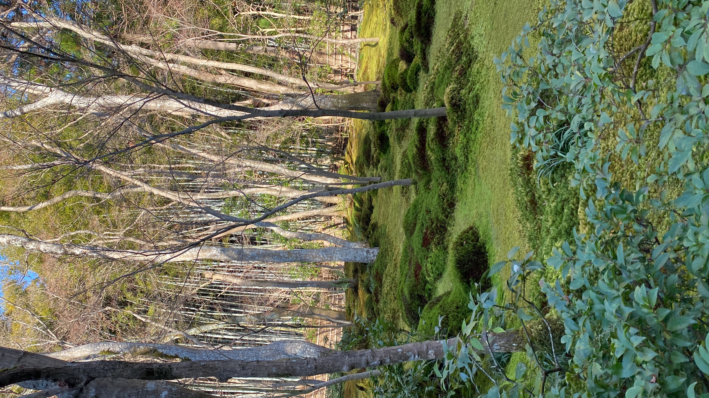

Bringing outdoor colors into my webpage.

linkI am using a monochromatic color scheme with three shades of green. These colors remind me of trees and leaves outdoors, in the photo as this photo was taken in Japan. The pale green background, dark green navigation bar, and medium green accents create a peaceful feeling. I want viewers to feel calm and relaxed, when they view this image and almost like they are there with me taking photos and spending time in nature.